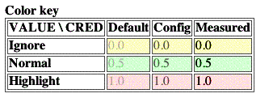

Cougaar includes optional servlet components to display metrics data in a browser. These servlets can be used to:
The servlets are documented in more detail below. Here is a brief summary of the servlets, in order of most common use by developers:
The rest of this section describes each servlet in more detail:
format uri
argument. One or more query paths should be supplied as the value of
the paths uri argument, with | as the
separator.
Usage:
"http://localhost:8800/$nodename/metrics/query?format=xml&paths=Agent(3-69-ARBN):Jips|Agent(3-69-ARBN):CPULoadJips10SecAvg"
The 'format' argument is optional, but if left out defaults to xml return of metric data to the browser.
An optional Java version of a metrics query client was written and resides in
core/examples/org/cougaar/core/examples/metrics/ExampleMetricQueryClient,
returning a hashmap of path values from the query-specified node.
key and
value should be supplied with uri arguments of the
same name. For now the value must be parseable as a double.
The metric will be entered with USER_DEFAULT_CREDIBILITY (0.3)
and with the client host as the provenance.
Usage:
Specified by a prefix of protocol, host, port, nodename and path, followed by some key-value pair in the usual http::get
parameter format.
e.g.:
"http://localhost:8800/$nodename/metrics/writer/?key=Site_Flow_10.200.2.0/24_10.200.4.0/16_Capacity_Max&value=5600"
Several metrics servlets uses gui conventions to show three attributes of each metric. In addition, some are mouse sensitive: all the metric's attributes are displayed on the browser's documentation line.
The value of the metric is displayed as the base text.
The credibility of the metric is displayed as the color of the text: light gray to indicate that the metric value was only determined as a compile-time default; gray to indicate that the metric value was obtained from a configuration file; black to indicate that the metric value was obtained from a run-time measurement. A metric's credibility metric is an approximate measure of how much to believe that the value is true. Credibility takes into account several factors, including when, how, by whom a measurement was made.
When the value of a metric crosses a threshold, its value may be interesting enough to warrant attention. This is shown by the color of the background. A green background indicates that the value is in the normal range. A yellow background indicates that the values is in a typical ground state, i.e nothing is happening. A red background indicates that the value has crossed a metric-specific threshold and may be interesting.
|  |